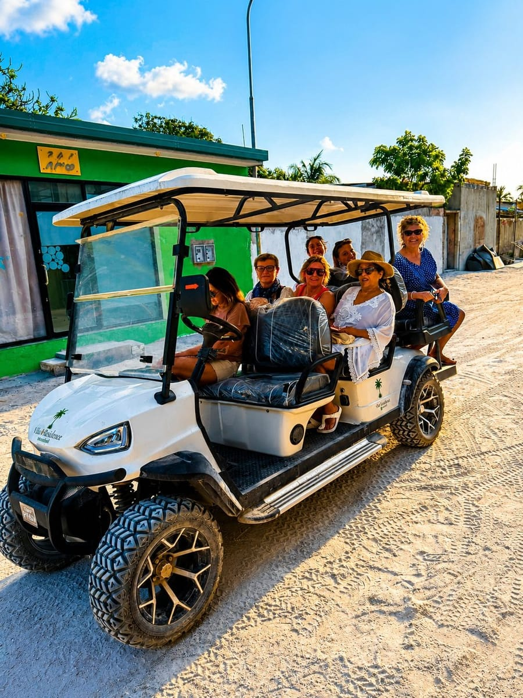

South Ari Atoll (officially Alifu Dhaalu Atoll) is a central Maldivian atoll about 75km south of Malé, made up of a ring of reefs around a mix of resorts and inhabited local islands. It's best known for whale sharks and manta rays, both generally accessible to snorkelers as well as divers, and for local islands like Maamigili — home to its own domestic airport — that make it one of the more practical parts of the Maldives to visit as a guesthouse traveler rather than only a resort guest. This guide covers the atoll as a whole; for excursion-level detail, our Whale Shark and Manta Ray guides and our Maamigili Guide go deeper.
Quick Facts
Location
Central Maldives, about 75km south of Malé.
Atoll Type
Ring atoll — administrative atoll code Alifu Dhaalu.
Best Known For
Whale sharks and manta rays, both generally accessible to snorkelers.
Getting There
Domestic flight (~20–30 min) or speedboat (~1h45m) from Malé.
Geography & Orientation
South Ari Atoll — Alifu Dhaalu in Dhivehi — is one of the Maldives' 26 administrative atolls, a ring-shaped chain of reefs and sandbanks in the central Maldives. It was formed in 1984, when the larger Ari Atoll was administratively divided into a northern half (Alifu Alifu, or North Ari) and a southern half (Alifu Dhaalu, or South Ari). The atoll combines a number of resort islands with a smaller number of inhabited local islands, each with its own small community.
South Ari vs. North Ari
South Ari and North Ari were once a single atoll, and the administrative split between them dates to 1984. Beyond that formal division, the two are often described differently by divers and snorkelers: South Ari is the atoll most associated with year-round whale shark encounters, while North Ari is more commonly described around stronger currents and its own diving and manta sites. We don't have a reliably sourced basis for comparing dive difficulty or conditions between the two atolls in detail, so if that distinction matters to your trip, it's worth checking with a dive operator directly. If whale sharks are what you're after, South Ari is the atoll most associated with them.
Whale Sharks
The South Ari Marine Protected Area (SAMPA), established in 2009 along the atoll's southern rim, protects one of the few places in the world where whale sharks can be encountered throughout the year. Research by the Maldives Whale Shark Research Programme has found no strong seasonal pattern to individual sightings here — most of the sharks are immature males, and researchers believe the area functions as a kind of nursery habitat rather than a stop on a migration route. South Ari's whale sharks are also recognized by Visit Maldives for their high site fidelity, meaning many of the same individuals are seen here repeatedly rather than passing through once. Sightings are never guaranteed, and no diving certification is required — sightings here are generally accessible to snorkelers.
Read our full Whale Shark Snorkeling guide →
Manta Rays
Manta rays are also part of what makes South Ari worth visiting, though — unlike the atoll's whale sharks — they're not tied to one site. Reef manta rays are year-round residents of Maldivian waters generally, but where and how they're behaving on a given day varies: sometimes hovering at a cleaning station while smaller fish clean their skin and gills, sometimes feeding, sometimes simply passing through. That's why manta excursions here are built around checking recent sightings and sea conditions rather than visiting one fixed manta site.
Read our full Manta Ray Snorkeling guide →
Snorkeling & Diving
Whale shark and manta ray encounters in South Ari are generally accessible by snorkeling — you don't typically need a diving certification to see either. Diving is also available in South Ari, with its own dive sites, wrecks, and channels, but it isn't something Vilu Residence operates directly; diving runs through a certified, independent dive centre, and it's worth checking with one directly for sites, requirements, and pricing.

Local Islands of South Ari
South Ari Atoll has a mix of resort islands and a smaller number of inhabited local islands — real communities with guesthouses, mosques, and everyday island life rather than resort infrastructure.
Maamigili — Where Vilu Residence Is Based
Maamigili has its own domestic airport, which makes it a natural point of arrival for the surrounding area. It's also the island Vilu Residence calls home, and it's where our own whale shark and manta excursions run from.
See our full Maamigili Guide →
Other Local Islands Worth Knowing
Dhigurah
Known as "Long Island" in Dhivehi, with one of the atoll's longest beaches and a lagoon commonly associated with manta ray sightings.
Dhangethi
A smaller island with its own house reef and a bikini beach, often mentioned as a base for diving.
Omadhoo
A quieter fishing island with its own bikini beach.
Mahibadhoo
Commonly described as the atoll's administrative centre, home to the atoll office.
The atoll has other inhabited islands too, each with its own everyday rhythm — worth asking about locally if you're keen to explore beyond Maamigili.
Local-Island Life — Culture, Dress & Bikini Beaches
South Ari's inhabited islands, including Maamigili, are governed by Maldivian law and local custom, which differs from what you'd find at a private resort. Alcohol isn't sold or served on local islands. Modest dress is expected in public areas — shoulders and knees covered — and swimwear is generally limited to a designated "bikini beach," a specific stretch of shoreline set aside for it, separate from the rest of the island. This isn't unique to South Ari; it's standard across the Maldives' inhabited local islands, and it's part of what makes staying on one feel different from a resort — you're a guest in an actual community, not on a private island.
See our Maamigili Guide →
Getting There & Around
Reaching South Ari Atoll means one connection from Velana International Airport in Malé: a domestic flight into Maamigili's airport (around 20–30 minutes), or a direct speedboat (around 1 hour 45 minutes). Seaplanes also operate in the Maldives, but they mainly serve private resorts with their own seaplane platforms — for a guesthouse stay on Maamigili, the domestic flight or speedboat are the practical options.
Getting between islands within the atoll — say, from Maamigili to a nearby local island — is generally possible by local ferry or speedboat, though schedules and operators can change, so it's worth confirming current arrangements locally or with your accommodation rather than relying on a fixed timetable.
See current prices and schedules on our Getting Here page →
Best Time to Visit
There isn't a single "best" month to visit South Ari for the wildlife itself — whale sharks and manta rays are both present through the year, with manta locations and behavior shifting with monsoon-driven conditions rather than disappearing on a fixed schedule. Weather and sea conditions vary through the year and can affect visibility, comfort, and whether excursions can operate as planned.
See our full Best Time to Visit guide →
Where to Stay
South Ari Atoll offers two very different ways to stay: private resort islands, and guesthouses on inhabited local islands like Maamigili. The two come with real trade-offs — cost structure, privacy, and how much you're immersed in local life — rather than one being objectively better. Local-island guesthouses tend to offer a different cost structure from private resorts, though exact pricing depends on the property and season.
See our full Guesthouse vs Resort comparison → and our Holiday Packages →
What Else to Do
Beyond whale sharks and manta rays, South Ari's islands are also a base for reef snorkeling, sandbank trips, sunset cruises, and dolphin cruises — most run as half-day or short excursions from wherever you're staying.
See our full Things to Do in Maamigili guide →
Food
Local islands in South Ari have their own small cafés and restaurants, serving a mix of Maldivian dishes and international options — generally simpler and more casual than resort dining.
See our Maamigili Guide →
Trip Length & Sample Itinerary
How long to spend in South Ari depends on what you want to fit in — whale shark snorkeling, manta snorkeling, reef time, and some slower island days all add up differently depending on your priorities. Because sightings and excursions depend on weather and sea conditions, it's worth building some flexibility into your plans rather than a tightly fixed schedule. Here's a simple 3-day outline as a starting point — not the only way to structure a trip, just one practical example.
Day 1
Arrive, settle in, and get your bearings on the island. Optional sunset cruise in the evening.
Day 2
Whale shark snorkeling in the morning, followed by a manta ray excursion in the afternoon — where exactly depends on recent sightings and conditions.
Day 3
A sandbank trip in the morning, time to explore the local island on foot, then departure.
Responsible Marine Tourism
Whale sharks and manta rays are both protected in the Maldives, and our Whale Shark and Manta Ray guides both go into the specific, source-verified guidance for how to behave around each — including what's a legal requirement and what's recommended best practice, since the two aren't the same for every species. The short version: keep your distance, never touch or chase, and follow your guide's briefing before entering the water.